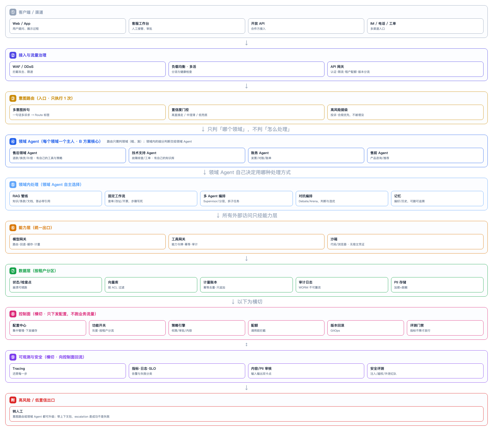

企业级架构：领域 Agent 版（B 方案）
为什么选这个架构
意图路由有两种典型接法：
| 方案 | 路由目标 | 跳数 | 适合 |
|---|---|---|---|
| A 直连处理 | 处理方式（RAG/工作流/Agent） | 1 | 领域简单、处理方式统一 |
| B 领域 Agent（本章） | 领域（售后/技术/账务/售前） | 2 | 领域多、领域内处理差异大、需独立演进 |
B 更合理的地方在于把"两层判断"拆开，每层都变简单：
- 意图路由只判"哪个领域"——粗粒度、更准、更好维护；
- 领域内的细分判断交给领域 Agent——它有领域上下文、自己的工具与策略。
代价是多一跳（多一次模型调用），所以只在复杂领域用 B，简单请求仍可短路直连。
一图看懂

图 1 · 九层：意图路由判领域 → 领域 Agent 自主决定用 RAG/工作流/编排 → 统一能力层出口
关键设计
1. 意图路由只判领域，不判处理方式
text
「我要退款，另外查下订单到哪了」
→ 多意图拆句：退款 + 查单
→ 两个诉求都属"售后领域"
→ 路由输出：售后领域（+ 高风险标记若有）
路由不关心退款要走工作流还是 RAG——那是售后领域 Agent 的事。这样路由的规则从 领域 × 处理方式 降为 领域，组合数大幅减少。
2. 领域 Agent 是"领域主人"
每个领域 Agent 拥有：
- 自己的工具集（售后：退款、换货；技术：日志查询、工单）
- 自己的知识库（售后的退款政策 vs 技术的故障手册，互不干扰）
- 自己的策略（退款审批线、技术升级规则）
- 自己的记忆（用户在该领域的偏好与历史）
这是 B 的核心价值：领域知识不堆在一个巨石 Agent 里，而是各自演进。
3. 领域 Agent 内部再选处理方式
领域 Agent 拿到请求后，自己决定：
text
售后领域 Agent
├─ 政策咨询 → RAG（查退款政策）
├─ 查单/改址 → 固定工作流（工具调用）
├─ 复杂退款 → Supervisor 多 Agent（政策/证据/方案/风险）
└─ 补偿方案 → Arena 选优
注意：这里才是范式选型真正生效的地方——不是路由决定用哪种范式，是领域 Agent 按具体任务决定。
4. 高风险可以从两处升级
- 意图路由层：识别到投诉/法律威胁 → 直接转人工（不进领域 Agent）
- 领域 Agent层：处理中发现低置信/超权限 → 升级转人工
这就是图最底部那个红色出口。升级不是失败，是正确行为。
5. 能力层仍是统一出口
不管哪个领域 Agent，模型/工具访问都走模型网关、工具网关、沙箱。领域隔离不能靠"每个领域自己调模型"，否则计量、审计、限流全散掉。
一次请求的完整路径
text
1. 接入 WAF → LB → API 网关：认证、租户配额、限流
2. 路由 意图路由：多意图拆句 → 判领域 → 置信度门控 → 高风险提级
3. 领域 进入"售后领域 Agent"
4. 领域内 售后 Agent 判断：这是政策咨询 → 走 RAG
或：这是复杂退款 → 起 Supervisor 拆子任务
5. 能力 RAG/编排 经由 模型网关 + 工具网关（能力令牌）
6. 数据 状态入检查点、向量按租户、用量入账本、审计落 WORM
7. 横切 全程 trace；输入输出内容/PII 双审核
8. 回流 trace 与失败样本回到控制面 → 评测集 → 发布门禁
A 方案 vs B 方案：怎么取舍
| 维度 | A 直连处理 | B 领域 Agent |
|---|---|---|
| 路由组合数 | 领域×处理方式（多） | 仅领域（少） |
| 延迟 | 低（1 跳） | 高（2 跳） |
| 成本 | 低 | 高（多一次模型调用） |
| 领域知识隔离 | 弱（散在各 handler） | 强（每个 Agent 自己管） |
| 领域独立演进 | 难 | 易（改一个领域不影响别的） |
| 适合规模 | 小、领域单一 | 大、多领域、长期演进 |
实践建议：混合。 简单请求（FAQ/查单）路由后直连处理（A，短路）；复杂领域（售后、技术）进领域 Agent（B）。不要为了统一而全部走 B——那是拿延迟和成本换一致性，通常不划算。
自检清单
- [ ] 能说出意图路由在 B 方案里"只判什么、不判什么"。
- [ ] 能解释领域 Agent 的四个"自己的"（工具/知识/策略/记忆）。
- [ ] 能说出范式选型在 B 方案里发生在哪一层（领域 Agent 内部）。
- [ ] 能说出高风险可以从哪两处升级转人工。
- [ ] 能判断一个业务该用 A、B 还是混合。
- [ ] 能说出为什么领域隔离不能靠"每个领域自己调模型"。
一个具体领域接入示例（研发/Coding）：见把 Coding 能力接进平台。
相关：企业级参考架构（A 方案视角与全量技术栈）、范式选型指南（领域 Agent 内部怎么选范式）、多意图路由（路由层如何拆多意图）。